何を見せたいのか？
- キャラクターの感情
- 全身のアクション
- キャラクター同士の関係
- 背景や世界観
- アイテムなどの重要な情報
+9の授業 ／ 座学 09
カメラには、単にカメラを動かす技術ではなく、
観客に対して「伝える役割」がある。
同じキャラクターアニメーションでも、
カメラの位置やレンズ、動かし方を変えることで、
映像の印象は大きく変化する。
「意図次第」。
映像では、観客はカメラを通して場面を見る。
そのため、制作者はカメラによって
観客の視線を誘導し、
必要な情報を適切な順番で見せる必要がある。座学 03ステージング
カメラを配置するときは、最初に次の3点を考える。
何を見せたいのか？
どのように感じてほしいのか？
なぜ、そのカメラを選ぶのか
「格好いいから」「映画っぽいから」だけでなく、
カメラの目的（意図）を説明できるようにする。
ショットサイズ
ショットサイズとは、画面の中に人物や背景を
どの程度入れるかを表す考え方。
ショットサイズによって、
観客が注目する情報が変わる。
エクストリームロングショット
人物が非常に小さく、
背景や空間を大きく見せる画角。
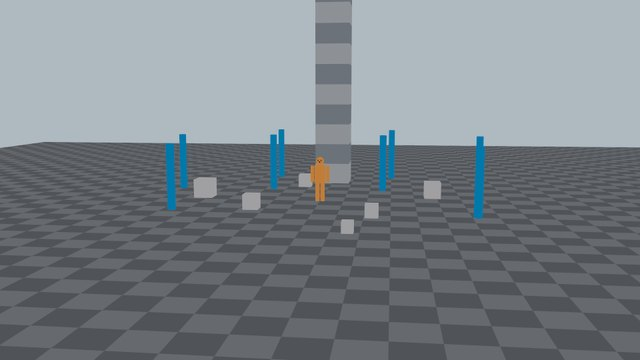
ロングショット
人物の全身と周囲の空間が見える画角。
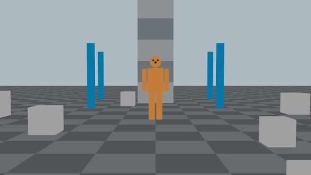
フルショット
人物の頭から足先までを画面に収める。
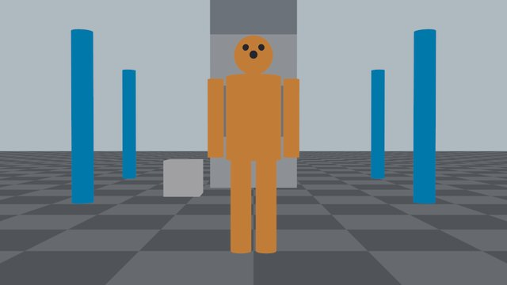
アニメーションのポーズを確認しやすい一方、
表情は伝わりにくくなる。
ミディアムショット
（ウエストショット、バストショット）
腰や胸付近から上を映す。
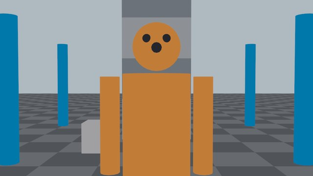
クローズアップ
顔を大きく映す。
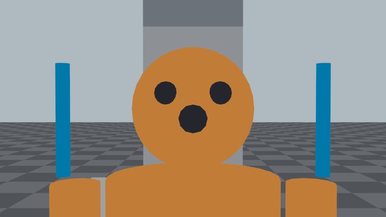
クローズアップでは、小さな表情変化も目立つ。
エクストリームクローズアップ
目や口、手、アイテムなど、
一部分を極端に大きく映す。
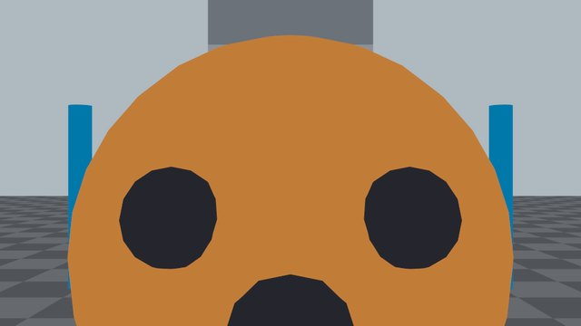
多用すると映像が大げさになるため、
重要な場面に限定して使用する。
カメラアングル
カメラアングルとは、
被写体をどの高さや角度から見るかという考え方。
アングルを変えることで、
人物の立場や心理的な印象を変えられる。
アイレベル
人物とほぼ同じ高さから撮影。
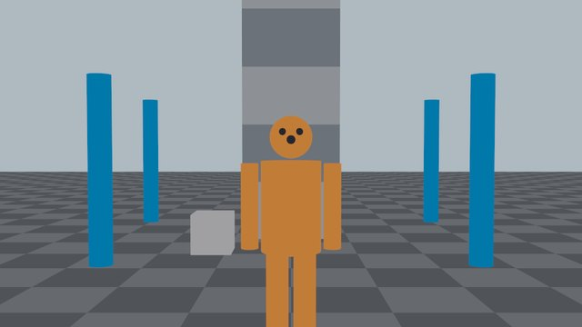
会話シーンや基準となるカメラとして使われる。
ハイアングル
人物より高い位置から見下ろす。
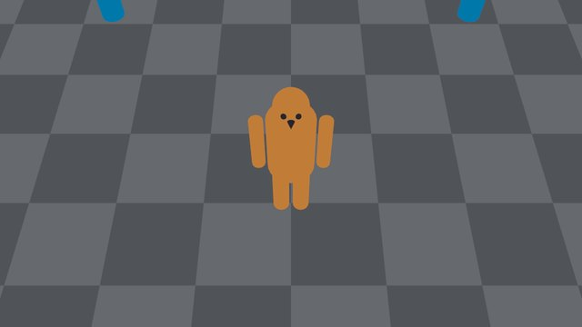
広い空間や位置関係を見せる目的でも使われる。
ローアングル
人物より低い位置から見上げる。
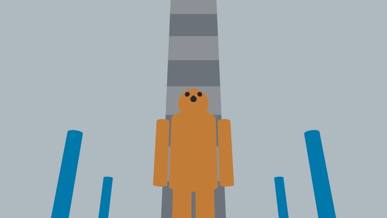
ローアングルだから必ず格好よくなるわけではない。
人物のポーズ、表情、
ライティングと組み合わせて使用する。
真上からのアングル
被写体を上空から見下ろす。
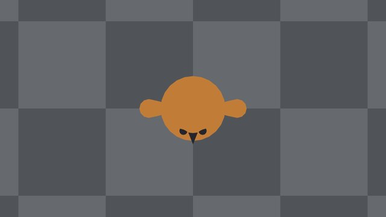
ダッチアングル
カメラを横方向に傾け、水平線を斜めにする。
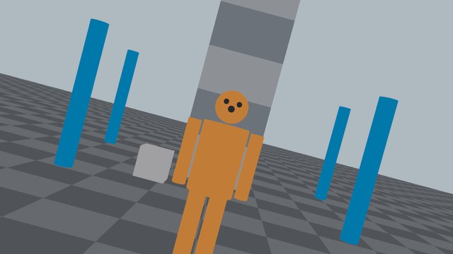
強い効果があるため、
明確な意図がある場面で使用する。
動画は ▶ で再生できる。
上＝外から見たカメラの動き（黄色はカメラに写る範囲）、
下＝カメラに映る画面。
レンズと焦点距離
Mayaのカメラでは、
Focal Lengthの値によって画角と遠近感が変化する。
広角レンズ
焦点距離の数値が小さいレンズ
（パースが効いている状態）。
特徴
適した場面
人物の顔に近づきすぎると、
顔の形が大きく歪むことがある。
望遠レンズ
焦点距離の数値が大きいレンズ
（パースが効いていない状態）。
特徴
適した場面
カメラの動き
カメラを動かす場合は、
動かすこと自体を目的にしてはいけず、
カメラが動く理由（意図）を考えることが重要。
パン（レフト / ライト）
カメラの位置を変えず、左右に回転させる。
ティルト（アップ / ダウン）
カメラの位置を変えず、上下に回転させる。
現場によっては、
「パンアップ／パンダウン」とも呼ぶ。
ドリー（イン / アウト）
カメラ自体を前後に移動させる。
カメラが実際に移動するため、
人物と背景の見え方が変化する。
トラック
カメラ自体を左右に移動させる。
ペデスタル（アップ / ダウン）
カメラ自体を上下に移動させる。
ティルトとは異なり、
カメラの向きを変えずに高さを変更する。
オービット
被写体の周囲を回り込むようにカメラを移動させる。
ズーム（イン / アウト）
カメラの位置を動かさず、焦点距離を変更する。
画面上では被写体が大きくなるが、
被写体と背景の位置関係は基本的に変わらない。
混同しやすい動き
画面の中では似た動きに見える組み合わせ。
カメラの位置を変えないか、
カメラ自体が動くかで分かれる。
| 方向 | 位置を変えない （向きやレンズを変える） | 位置を変える （カメラ自体が動く） |
|---|---|---|
| 左右 | パン | トラック |
| 上下 | ティルト | ペデスタル |
| 前後 | ズーム | ドリー |
ドリーとズームの違い
ドリーとズームは、
どちらも被写体が大きく見えるため
混同されやすい操作。
| 比べる所 | ドリー（イン / アウト） | ズーム（イン / アウト） |
|---|---|---|
| カメラ | カメラ自体が移動する | カメラの位置は変わらない 焦点距離が変化する |
| 遠近感 | 遠近感が変化する | 遠近感の変化はドリーより少ない |
| 見え方 | 手前と奥の物の位置関係が変わる | 画面の一部を拡大するように見える |
| 印象 | 空間に入り込む印象になる | ― |
両者を同時に逆方向へ変化させると、
人物の大きさを保ちながら
背景の見え方を変える、
ドリーズームという表現も可能。
カメラを置くときは、
被写体を画面の中央に入れるだけでは不十分。
観客がどこを見るかを考え、
画面内の要素を配置する。
三分割法
画面を縦横それぞれ3分割し、
線や交点付近に重要な要素を置く方法。
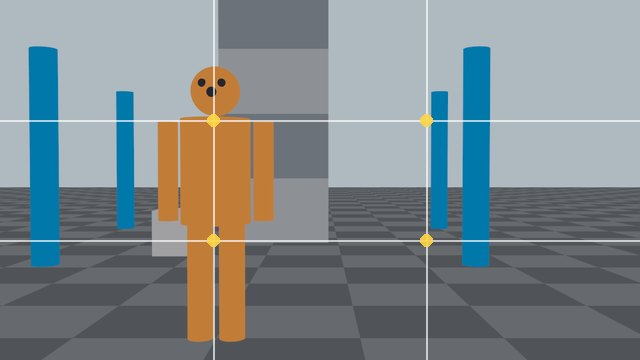
三分割法は絶対的なルールではなく、
構図を考えるための基準。
ヘッドルーム
人物の頭と画面上端の間にある余白。
余白が多すぎると人物が小さく見え、
少なすぎると窮屈に見える。
ショットサイズに応じて適切な量を調整する。
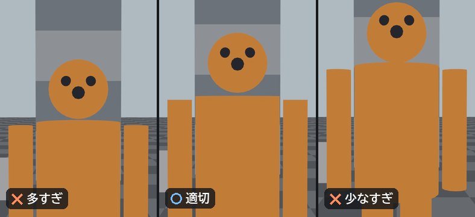
ルックルーム
人物が見ている方向に作る余白。
視線の先に空間を作ることで、
人物が何かを見ていることが伝わりやすくなる。
反対側に余白を作ると、
人物が追い詰められているような
印象を作ることもできる。
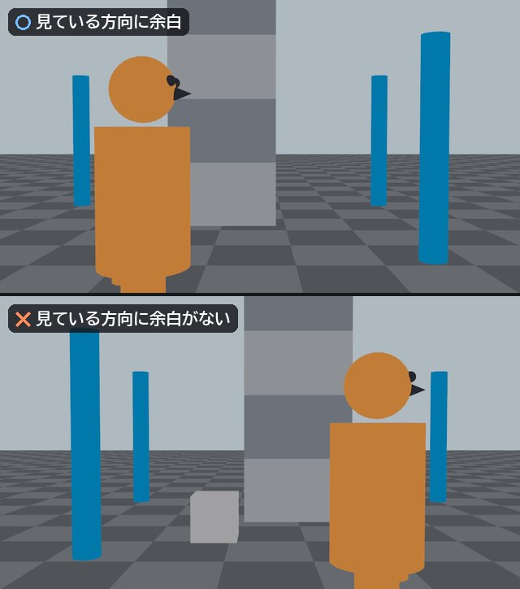
リードルーム
人物や物体が移動する方向に作る余白。
進行方向に余白がないと、
被写体が画面の端にぶつかっているように見える。
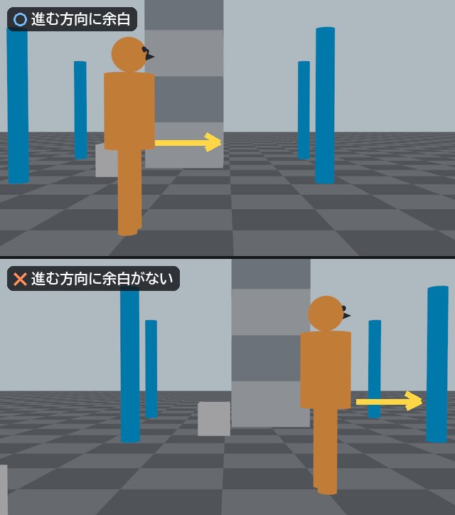
ネガティブスペース
人物や物が置かれていない空間。
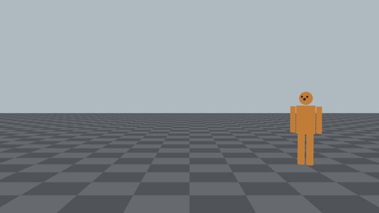
余白は、何もない場所ではなく、
演出に使うための空間。
180度（イマジナリーライン）ルール
2人の人物が向かい合っている場合、
2人を結ぶ線をイマジナリーラインという。
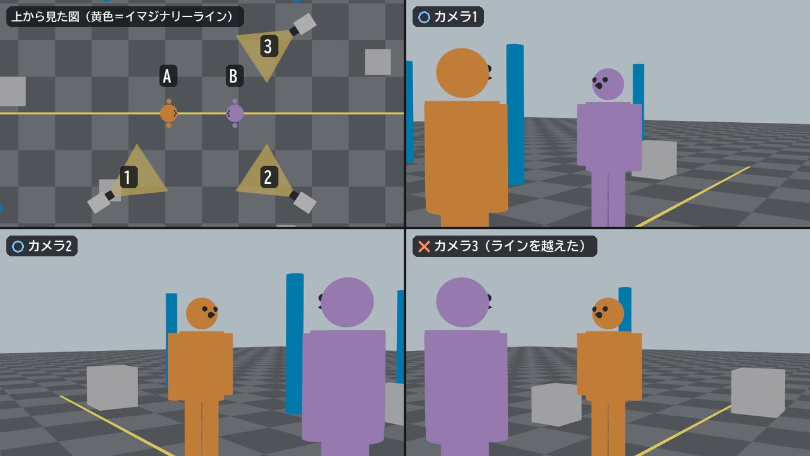
ラインを越えること自体が禁止されているわけではない。
混乱や違和感を意図的に作る場合や、
カメラの移動によって位置関係を
説明できる場合には使用できる。
スクリーンダイレクション
スクリーンダイレクションとは、
画面の中で人物や物体が進む方向のこと。
例えば、あるショットで人物が
画面の左から右へ進んでいる場合、
次のショットでも基本的には同じ方向に進ませる。
方向が急に逆転すると、
観客は人物が引き返したと感じる可能性がある。
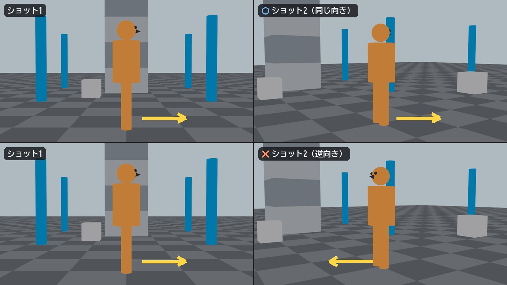
注意する場面
アイライン
アイラインとは、人物が見ている方向を示す線。
人物の視線と、
その次に映る対象の位置関係を合わせることで、
観客は人物が何を見ているのか理解できる。
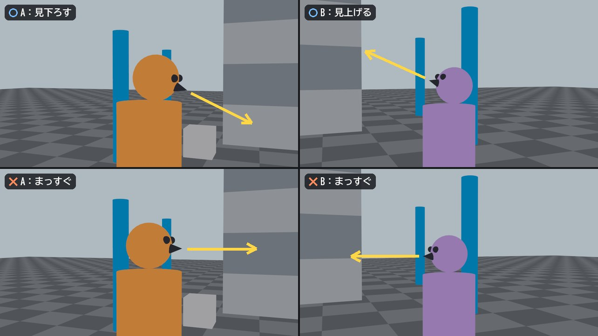
押さえどころ
顔だけを相手に向けても、
目線が合っていなければ違和感が生じる。
カメラもキャラクターと同様に、
アニメーションの原則を意識して動かす。
加速と減速座学 03スローイン・スローアウト
カメラが急に動き始め、
急に停止すると機械的に見える。
基本的には、
動き始めと停止時に適切な加速と減速を加える。
ただし、衝撃や驚きを表現する場合には、
あえて急な動きを使用することもある。
動きのタイミング
カメラがキャラクターより先に動くか、
後から追うかによって印象が変わる。
キャラクターより先に動く場合
キャラクターを後から追う場合
シチュエーションに合わせて、
カメラを先に動かすか、後から追うか？を考えること。
カメラを止める判断
カメラは常に動かす必要はない。
固定カメラ（Fixカメラ）にも次の利点がある。
カメラを動かさなくても成立する場合は、
固定カメラも有力な選択肢になる。
Mayaで確認する主な項目
| 項目 | 説明 |
|---|---|
| Near Clip Plane | カメラに近すぎる物体を表示しない距離。 数値が大きすぎると、 カメラに近いモデルが消えることがある。 |
| Far Clip Plane | カメラから遠すぎる物体を表示しない距離。 広い背景が消える場合は、この値を確認。 |
| Focal Length | レンズの焦点距離を設定。 数値を小さくすると広角になり、 数値を大きくすると望遠になる。 |
| Roll | カメラのロール。 エイムカメラ時、カメラ自体のZ軸回転には、 このパラメータを使用する。 ※エイムカメラ＝注視点の方を向き続けるカメラ （作成 ＞ カメラ ＞ カメラおよびエイム） |
| Resolution Gate | 最終的にレンダリングされる画面範囲を表示。 カメラアニメーションを作る時、 Resolution Gateを表示し、 最終画面の内側で構図を確認する。 |
| Film Gate | カメラのフィルムサイズを基準にした範囲を表示。 Resolution Gateとは範囲が異なる場合があるため、 最終出力の確認にはResolution Gateを基準にする。 |
| Safe Action | 重要な動きや人物を、 安全に表示できる範囲の目安。 |
| Safe Title | 文字や字幕を安全に配置できる範囲の目安。 |
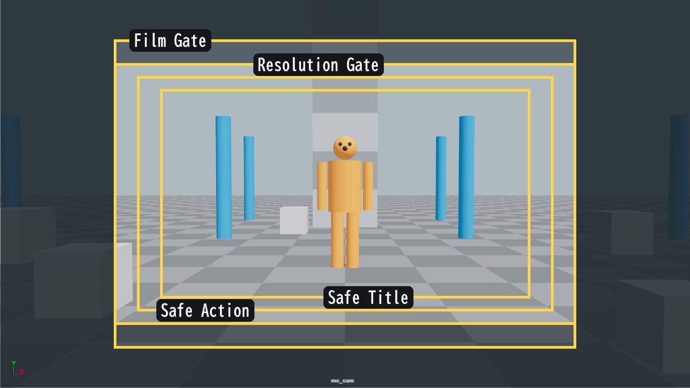